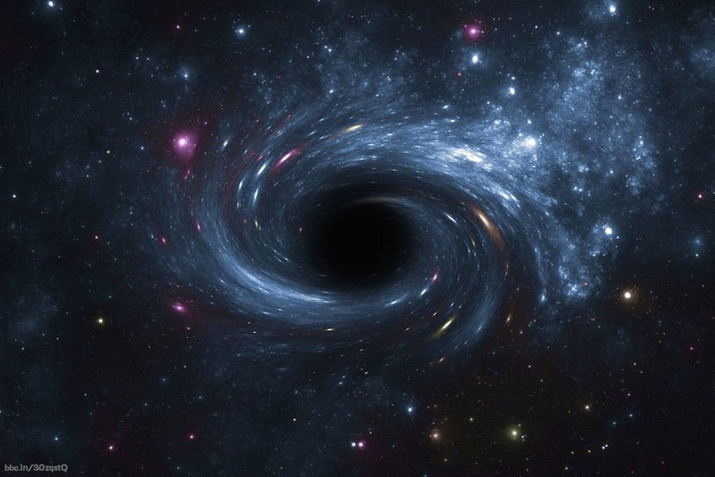

scale="0.1 0.1 0.1"
rotation="0 180 0"
material="metalness: 1; roughness: 0.2; specular: #ffffff; specularIntensity: 0.5;"
>
orbit-controls="target: 0 1 0; enableDamping: true; dampingFactor: 0.125; rotateSpeed: 0.1; zoomSpeed: 0.5; minDistance: 3; maxDistance: 50;"
>